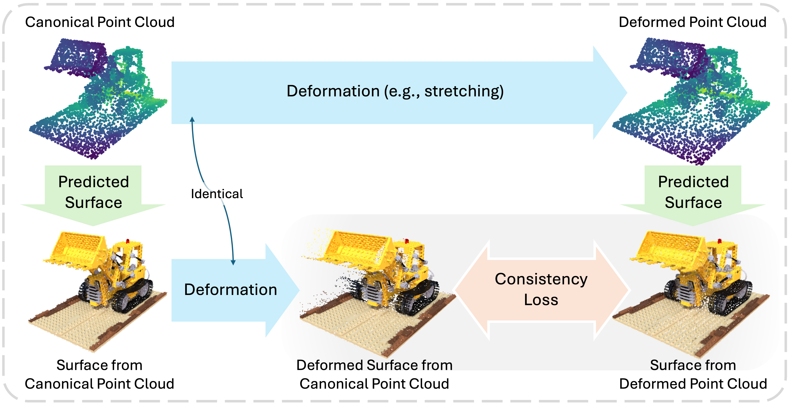
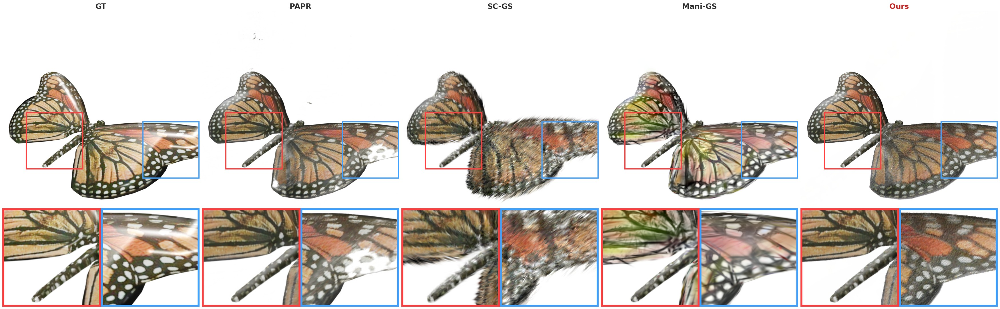
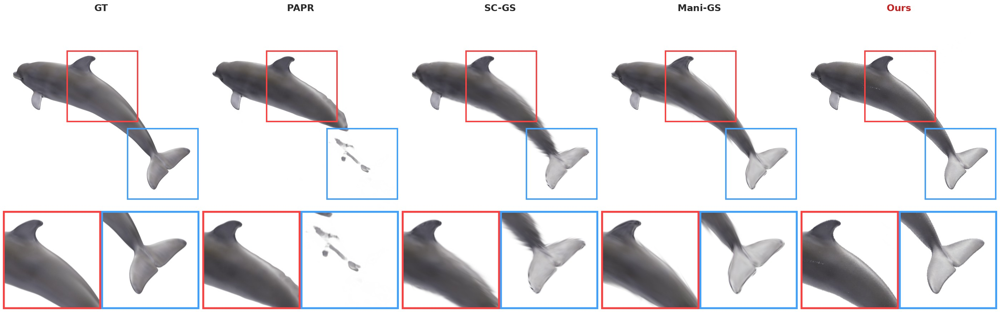
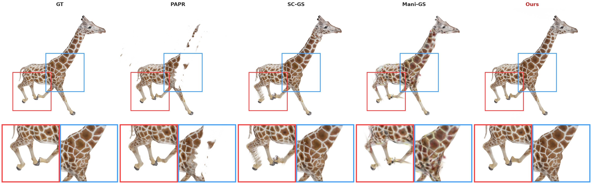
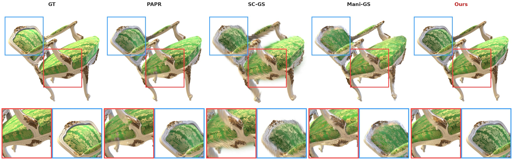
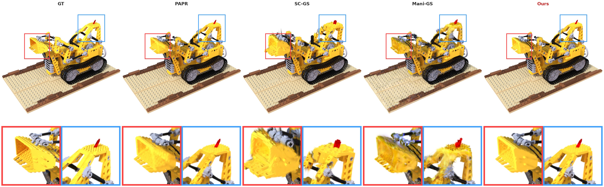

P-CORE: Self-Supervised Surface Consistency for Point-Based Neural Editing
Abstract
Advances in neural rendering have enabled high-fidelity multi-view reconstruction of 3D scenes. However, free-form non-rigid shape editing remains a significant challenge. Point-based neural representations are highly desirable for multi-view reconstruction because they lack fixed connectivity, which does not constrain the learned surface topology to that of the initialization. Yet this same property causes point-based representations to struggle with holes and surface discontinuities under large deformations. To address this, we propose a novel self-supervised method to enable point-based representations to adapt to large deformations without requiring ground truth multi-view images of deformed geometry. The key idea is to generate random deformations and to ensure consistency in the predicted surface before and after deformation. In particular, the surface prediction from the deformed point cloud should be the same as the deformation applied to the surface prediction from the original point cloud. We incorporate our approach into attention-based point representations, which differ from splatting-based point representations in their use of a learned interpolation kernel between points as opposed to a Gaussian kernel around each point. This learned interpolation kernel can learn to adapt to large deformations, without requiring addition or removal of points. We show that our framework significantly enhances its robustness to large deformations. Experiments on synthetic geometry editing benchmarks (Neural Editor, Objaverse) demonstrate that our approach outperforms existing point-based methods in zero-shot editing and significantly reduces artifacts. Furthermore, qualitative results on the DTU and Mip-NeRF 360 datasets demonstrate our method's effectiveness on real-world scenes.
Method Overview

While point-based representations learn an accurate surface from multi-view images in their canonical space, they often produce holes and surface discontinuities under unseen deformations. P-CORE applies an identical deformation field to both the canonical point cloud and its predicted surface points; the deformed surface points act as geometric pseudo-ground truth that supervises the model's surface prediction on the deformed point cloud. A stop-gradient on the target prevents collapse. This self-supervised fine-tuning yields robust, hole-free surfaces under severe non-rigid edits.
Video Presentation
Qualitative Results
Zero-shot non-rigid edits, compared against GT, PAPR, SC-GS, and Mani-GS.

Butterfly (Objaverse) — wings folded; P-CORE keeps surfaces intact.

Dolphin (Objaverse) — large bending without tears.

Giraffe (Objaverse) — thin structures stay connected.

Chair (Neural Editor) — clean geometry under deformation.

Lego (Neural Editor) — fewer artifacts than baselines.
Poster
BibTeX
@article{YourPaperKey2024,
title={Your Paper Title Here},
author={First Author and Second Author and Third Author},
journal={Conference/Journal Name},
year={2024},
url={https://your-domain.com/your-project-page}
}